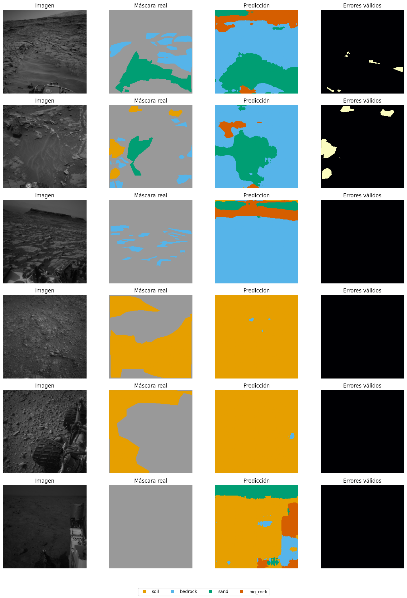
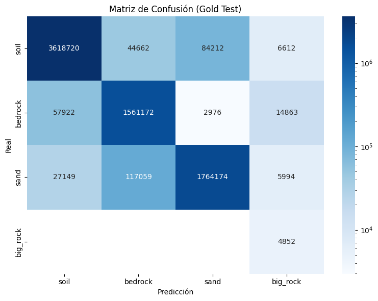

import os
import sys
import subprocess
from pathlib import Path
IN_COLAB = "google.colab" in sys.modules
# Solo activar si quieres reproducibilidad EXACTA del repo
FORCE_PROJECT_INSTALL = False
if IN_COLAB:
from google.colab import drive
drive.mount("/content/drive")
# =========================================================
# Repo en runtime temporal (rápido)
# =========================================================
PROJECT_ROOT = Path("/content/ai4mars_DL-v3")
if not PROJECT_ROOT.exists():
print("Clonando repositorio...")
subprocess.run([
"git", "clone",
"https://github.com/UnDauphin/ai4mars_DL-v3",
str(PROJECT_ROOT)
], check=True)
else:
print("Repositorio ya existe.")
subprocess.run([
"git", "-C", str(PROJECT_ROOT), "pull"
], check=False)
# =========================================================
# Dependencias (NO reinstalar torch por defecto)
# =========================================================
if FORCE_PROJECT_INSTALL:
print("Instalando dependencias exactas del proyecto...")
subprocess.check_call([
sys.executable, "-m", "pip", "install",
"torch==2.6.0",
"torchvision==0.21.0",
"--index-url",
"https://download.pytorch.org/whl/cu124",
"-q"
])
subprocess.check_call([
sys.executable, "-m", "pip", "install",
"-r",
str(PROJECT_ROOT / "requirements.txt"),
"-q"
])
print("Dependencias reinstaladas.")
else:
print("Usando entorno actual de Colab (recomendado).")
# =========================================================
# Path notebooks
# =========================================================
sys.path.append(str(PROJECT_ROOT / "notebooks"))
import mars_utils
# =========================================================
# Checkpoints persistentes en Drive
# =========================================================
DRIVE_ROOT = Path("/content/drive/MyDrive/ai4mars_DL-v3")
mars_utils.CHECKPOINTS_DIR = DRIVE_ROOT / "checkpoints"
mars_utils.CHECKPOINTS_DIR.mkdir(parents=True, exist_ok=True)
# =========================================================
# Validaciones
# =========================================================
required_dirs = [
PROJECT_ROOT / "processed",
PROJECT_ROOT / "data",
PROJECT_ROOT / "notebooks",
]
for d in required_dirs:
if not d.exists():
raise FileNotFoundError(f"Falta carpeta requerida: {d}")
print("\nColab configurado correctamente")
print(f"PROJECT_ROOT: {PROJECT_ROOT}")
print(f"CHECKPOINTS_DIR: {mars_utils.CHECKPOINTS_DIR}")
print("\nVerificación:")
print(f"processed/: {(PROJECT_ROOT / 'processed').exists()}")
print(f"data/: {(PROJECT_ROOT / 'data').exists()}")
print(f"notebooks/: {(PROJECT_ROOT / 'notebooks').exists()}")
print(f"checkpoints/: {(mars_utils.CHECKPOINTS_DIR).exists()}")
else:
# =========================================================
# Local
# =========================================================
cwd = Path.cwd().resolve()
candidates = [
cwd,
cwd.parent,
cwd.parent.parent,
]
PROJECT_ROOT = next(
(
p for p in candidates
if (p / "processed").exists()
and (p / "notebooks").exists()
),
cwd
)
sys.path.append(str(PROJECT_ROOT / "notebooks"))
print(f"Local — PROJECT_ROOT: {PROJECT_ROOT}")
Local — PROJECT_ROOT: C:\Users\User\Documents\DeepLearning\ai4mars_DL-v3
05b - IC-TransUNet como Benchmark Hibrido#
Benchmark adicional: IC-TransUNet adaptado a AI4MARS para contrastar una arquitectura CNN-Transformer dual branch contra la propuesta original SegFormer-B2.
Arquitectura base del paper: IC-TransUNet con doble rama InceptionNeXt + CSWin Transformer, ICFM, EEM, SCAFM, GLTB y cabeza MLP.
Adaptacion AI4MARS: segmentacion semantica de terreno marciano con 4 clases validas (soil, bedrock, sand, big_rock) y ignore_index=255.
El proyecto ya tiene data/images_256 y data/masks_256 preprocesadas. El split real esta congelado en processed/split_indices_msl6k.pkl: 4200 train, 1800 val, 322 gold test. La normalizacion se carga desde processed/normalization_stats.json, calculada solo sobre train.
Por defecto este notebook queda en modo recuperacion: carga checkpoints de Fase 1 ya entrenados, recalcula metricas sobre el gold test y actualiza los CSV del benchmark sin reentrenar.
import importlib.util
import platform
import numpy as np
import pandas as pd
import torch
import torchvision
import matplotlib
from IPython.display import display
print("Python:", platform.python_version())
print("CUDA disponible:", torch.cuda.is_available())
print("Torch:", torch.__version__)
print("Torch CUDA:", torch.version.cuda)
print("torchvision:", torchvision.__version__)
print("numpy:", np.__version__)
print("pandas:", pd.__version__)
print("matplotlib:", matplotlib.__version__)
if torch.cuda.is_available():
print("GPU:", torch.cuda.get_device_name(0))
free, total = torch.cuda.mem_get_info()
print(f"VRAM libre/total: {free/1024**3:.1f} GB / {total/1024**3:.1f} GB")
for pkg in ["timm", "transformers", "sklearn", "PIL", "seaborn", "scipy"]:
print(f"{pkg} instalado:", importlib.util.find_spec(pkg) is not None)
Python: 3.11.15
CUDA disponible: True
Torch: 2.6.0+cu124
Torch CUDA: 12.4
torchvision: 0.21.0+cu124
numpy: 2.4.4
pandas: 3.0.3
matplotlib: 3.10.9
GPU: NVIDIA GeForce RTX 4050 Laptop GPU
VRAM libre/total: 4.8 GB / 6.0 GB
timm instalado: True
transformers instalado: True
sklearn instalado: True
PIL instalado: True
seaborn instalado: True
scipy instalado: True
import json
import math
import random
import time
from copy import deepcopy
import matplotlib.pyplot as plt
from PIL import Image
from tqdm.auto import tqdm
import torch
import torch.nn as nn
import torch.nn.functional as F
from torch.utils.data import DataLoader
from mars_utils import (
ROOT, PROCESSED_DIR, DATA_DIR, IMAGES_256, MASKS_256,
CHECKPOINTS_DIR, RESULTS_DIR, BENCHMARK_CSV,
NUM_CLASSES, IGNORE_INDEX, IMG_SIZE, SEEDS,
CLASS_NAMES, CLASS_RGB,
load_norm_stats, load_split, make_fast_subset,
MarsTerrainDataset, JointTransformTrain, JointTransformVal,
MetricsAccumulator, DiceLoss,
append_benchmark_results, print_summary_table, count_parameters,
set_seed,
)
DEVICE = torch.device("cuda" if torch.cuda.is_available() else "cpu")
print("ROOT desde mars_utils:", ROOT)
print("DEVICE:", DEVICE)
ROOT desde mars_utils: C:\Users\User\Documents\DeepLearning\ai4mars_DL-v3
DEVICE: cuda
df_train, df_val, df_gold = load_split()
mean, std = load_norm_stats()
print("Normalización train-only:")
print("mean:", mean)
print("std: ", std)
print()
print("Tamaño split:")
print("train:", len(df_train), "val:", len(df_val), "gold test:", len(df_gold))
display(df_train.head(3))
display(df_gold.head(3))
✅ Split cargado — train: 4200 | val: 1800 | gold test: 322
Normalización train-only:
mean: [0.2303263779898021, 0.2303263779898021, 0.2303263779898021]
std: [0.10591342097577364, 0.10591342097577364, 0.10591342097577364]
Tamaño split:
train: 4200 val: 1800 gold test: 322
| mission | camera | id | image_path | mask_path | split | |
|---|---|---|---|---|---|---|
| 0 | MSL | ncam | NLA_397681801EDR_F0020000AUT_04096M1 | C:\Users\User\Documents\DeepLearning\ai4mars_D... | C:\Users\User\Documents\DeepLearning\ai4mars_D... | train |
| 1 | MSL | ncam | NLA_397681867EDR_F0020000AUT_04096M1 | C:\Users\User\Documents\DeepLearning\ai4mars_D... | C:\Users\User\Documents\DeepLearning\ai4mars_D... | train |
| 2 | MSL | ncam | NLA_397681893EDR_F0020000AUT_04096M1 | C:\Users\User\Documents\DeepLearning\ai4mars_D... | C:\Users\User\Documents\DeepLearning\ai4mars_D... | train |
| mission | camera | id | image_path | mask_path | split | |
|---|---|---|---|---|---|---|
| 0 | MSL | ncam | NLA_409036068EDR_F0051606NCAM00348M1 | C:\Users\User\Documents\DeepLearning\ai4mars_D... | C:\Users\User\Documents\DeepLearning\ai4mars_D... | test_gold |
| 1 | MSL | ncam | NLA_409036116EDR_F0051606NCAM00348M1 | C:\Users\User\Documents\DeepLearning\ai4mars_D... | C:\Users\User\Documents\DeepLearning\ai4mars_D... | test_gold |
| 2 | MSL | ncam | NLA_409036860EDR_F0051662NCAM00346M1 | C:\Users\User\Documents\DeepLearning\ai4mars_D... | C:\Users\User\Documents\DeepLearning\ai4mars_D... | test_gold |
MODEL_NAME = "IC-TransUNet-AI4MARS"
RECOVER_PHASE1_FROM_CHECKPOINTS = True
RUN_PHASE_1_SMOKE_TEST = False
RUN_PHASE_2_FULL_TRAINING = False
REQUIRE_CUDA_FOR_FULL_TRAINING = True
APPEND_TO_BENCHMARK = True
RESUME_TRAINING = True
RESET_RUN = False
RUN_TTA_EVAL = False
RUN_PHASE2_FINETUNING = False
RUN_ENSEMBLE_TTA = False
GLOBAL_SEED = 42
SEEDS_FULL = [123]
SEEDS_ENSEMBLE = [7,42, 123]
def detect_gpu_profile():
if not torch.cuda.is_available():
return "cpu"
name = torch.cuda.get_device_name(0).lower()
if "a100" in name:
return "a100"
if "t4" in name:
return "t4"
if "v100" in name or "l4" in name or "l40" in name:
return "mid_high"
return "cuda"
GPU_PROFILE = detect_gpu_profile()
# Forzamos mars_compact para evitar overkill en AI4MARS independientemente de la GPU
MODEL_VARIANT = "mars_compact"
VARIANT_CONFIGS = {
"mars_compact": dict(
dims=(48, 96, 192, 384),
cnn_depths=(2, 2, 4, 2),
trans_depths=(1, 1, 2, 1),
heads=(2, 3, 6, 8),
drop_path_rate=0.08,
dropout=0.05,
window_size=8,
),
"mars_base": dict(
dims=(64, 128, 256, 512),
cnn_depths=(2, 2, 6, 2),
trans_depths=(1, 2, 3, 1),
heads=(2, 4, 8, 8),
drop_path_rate=0.12,
dropout=0.05,
window_size=8,
),
}
if GPU_PROFILE == "a100":
BATCH_SIZE_FULL = 32
NUM_WORKERS = 4
elif GPU_PROFILE == "t4":
BATCH_SIZE_FULL = 8
NUM_WORKERS = 2
else:
BATCH_SIZE_FULL = 12 if DEVICE.type == "cuda" else 2
NUM_WORKERS = 2 if IN_COLAB else 0
GRAD_ACCUM_STEPS = 1
USE_AMP = True
USE_TORCH_COMPILE = False
MAX_GRAD_NORM = 1.0
NUM_EPOCHS_FULL = 150
PATIENCE_FULL = 20
LR = 4e-4
WEIGHT_DECAY = 1e-2
BETAS = (0.9, 0.999)
ETA_MIN = 1e-6
LOSS_ALPHA_CE = 0.4
LOSS_BETA_DICE = 0.3
LOSS_GAMMA_FOCAL = 0.3
CLASS_WEIGHT_MODE = "project_inverse_freq"
PAPER_ADAPTED_WEIGHTS = [1.0, 0.8, 2.0, 8.0]
MODEL_RUN_NAME = f"{MODEL_NAME}_{MODEL_VARIANT}"
RUN_DIR = RESULTS_DIR / MODEL_RUN_NAME
CKPT_DIR = CHECKPOINTS_DIR / MODEL_RUN_NAME
RUN_DIR.mkdir(parents=True, exist_ok=True)
CKPT_DIR.mkdir(parents=True, exist_ok=True)
print(f"Modelo: {MODEL_NAME}")
print(f"GPU profile: {GPU_PROFILE} | variante: {MODEL_VARIANT}")
print(f"Batch: {BATCH_SIZE_FULL} | grad_accum: {GRAD_ACCUM_STEPS} | workers: {NUM_WORKERS}")
print(f"Epochs: {NUM_EPOCHS_FULL} | patience: {PATIENCE_FULL}")
print(f"Loss: {LOSS_ALPHA_CE}*CE + {LOSS_BETA_DICE}*Dice + {LOSS_GAMMA_FOCAL}*Focal | class weights: {CLASS_WEIGHT_MODE}")
print("RUN_DIR:", RUN_DIR)
print("CKPT_DIR:", CKPT_DIR)
Modelo: IC-TransUNet-AI4MARS
GPU profile: cuda | variante: mars_compact
Batch: 12 | grad_accum: 1 | workers: 0
Epochs: 150 | patience: 20
Loss: 0.4*CE + 0.3*Dice + 0.3*Focal | class weights: project_inverse_freq
RUN_DIR: C:\Users\User\Documents\DeepLearning\ai4mars_DL-v3\results\IC-TransUNet-AI4MARS_mars_compact
CKPT_DIR: C:\Users\User\Documents\DeepLearning\ai4mars_DL-v3\checkpoints\IC-TransUNet-AI4MARS_mars_compact
if RUN_PHASE_2_FULL_TRAINING or RUN_PHASE2_FINETUNING:
import albumentations as A
from albumentations.pytorch import ToTensorV2
else:
A = None
ToTensorV2 = None
import numpy as np
from PIL import Image
import torch
from torch.utils.data import DataLoader, WeightedRandomSampler
import random
class AdvancedJointTransformTrain:
def __init__(self, mean, std):
self.transform = A.Compose([
A.RandomRotate90(p=0.5),
A.Affine(scale=(0.9, 1.1), translate_percent=(-0.05, 0.05), rotate=(-15, 15), p=0.5),
A.RandomBrightnessContrast(p=0.5),
A.GaussNoise(p=0.2),
A.ElasticTransform(alpha=1, sigma=50, p=0.2),
A.Normalize(mean=mean, std=std),
ToTensorV2()
])
def __call__(self, img, mask):
img = np.array(img)
mask = np.array(mask)
aug = self.transform(image=img, mask=mask)
return aug['image'], aug['mask'].long()
def seed_worker(worker_id):
worker_seed = torch.initial_seed() % 2**32
np.random.seed(worker_seed)
random.seed(worker_seed)
def compute_sample_weights(df):
print("Calculando pesos para WeightedRandomSampler (buscando big_rock)...")
weights = []
for p in df['mask_path']:
m = np.array(Image.open(p))
if 3 in m:
weights.append(5.0)
else:
weights.append(1.0)
return weights
def build_dataloaders_repro(df_tr, df_va, df_te, mean, std, batch_size, num_workers, seed):
generator = torch.Generator()
generator.manual_seed(seed)
persistent = num_workers > 0
pin = DEVICE.type == "cuda"
train_ds = MarsTerrainDataset(df_tr, AdvancedJointTransformTrain(mean, std))
val_ds = MarsTerrainDataset(df_va, JointTransformVal(mean, std))
test_ds = MarsTerrainDataset(df_te, JointTransformVal(mean, std))
sample_weights = compute_sample_weights(df_tr)
sampler = WeightedRandomSampler(weights=sample_weights, num_samples=len(sample_weights), replacement=True, generator=generator)
train_loader = DataLoader(
train_ds, batch_size=batch_size, sampler=sampler, num_workers=num_workers,
pin_memory=pin, persistent_workers=persistent,
worker_init_fn=seed_worker if num_workers>0 else None,
drop_last=False,
)
val_loader = DataLoader(
val_ds, batch_size=batch_size, shuffle=False, num_workers=num_workers,
pin_memory=pin, persistent_workers=persistent,
worker_init_fn=seed_worker if num_workers>0 else None,
generator=generator,
)
test_loader = DataLoader(
test_ds, batch_size=batch_size, shuffle=False, num_workers=num_workers,
pin_memory=pin, persistent_workers=persistent,
worker_init_fn=seed_worker if num_workers>0 else None,
generator=generator,
)
return train_loader, val_loader, test_loader
# ========== Módulos auxiliares ==========
class DropPath(nn.Module):
def __init__(self, drop_prob=0.0):
super().__init__()
self.drop_prob = float(drop_prob)
def forward(self, x):
if self.drop_prob == 0.0 or not self.training:
return x
keep_prob = 1.0 - self.drop_prob
shape = (x.shape[0],) + (1,) * (x.ndim - 1)
random_tensor = keep_prob + torch.rand(shape, dtype=x.dtype, device=x.device)
random_tensor.floor_()
return x.div(keep_prob) * random_tensor
class LayerNorm2d(nn.Module):
def __init__(self, dim, eps=1e-6):
super().__init__()
self.norm = nn.LayerNorm(dim, eps=eps)
def forward(self, x):
x = x.permute(0, 2, 3, 1)
x = self.norm(x)
return x.permute(0, 3, 1, 2).contiguous()
class ConvBNAct(nn.Module):
def __init__(self, in_ch, out_ch, kernel_size=1, stride=1, padding=0, groups=1, act=True):
super().__init__()
self.conv = nn.Conv2d(in_ch, out_ch, kernel_size, stride, padding, groups=groups, bias=False)
self.bn = nn.BatchNorm2d(out_ch)
self.act = nn.GELU() if act else nn.Identity()
def forward(self, x):
return self.act(self.bn(self.conv(x)))
class Mlp2d(nn.Module):
def __init__(self, dim, hidden_dim=None, dropout=0.0):
super().__init__()
hidden_dim = hidden_dim or dim * 4
self.net = nn.Sequential(
nn.Conv2d(dim, hidden_dim, 1), nn.GELU(), nn.Dropout(dropout),
nn.Conv2d(hidden_dim, dim, 1), nn.Dropout(dropout),
)
def forward(self, x):
return self.net(x)
# ========== InceptionNeXt ==========
class InceptionDWConv2d(nn.Module):
def __init__(self, dim, branch_ratio=0.125, square_kernel=3, band_kernel=11):
super().__init__()
gc = max(1, int(dim * branch_ratio))
if dim - 3 * gc <= 0:
gc = max(1, dim // 4)
self.gc = gc
self.identity_channels = dim - 3 * gc
self.dw_square = nn.Conv2d(gc, gc, square_kernel, padding=square_kernel//2, groups=gc)
self.dw_h = nn.Conv2d(gc, gc, (1, band_kernel), padding=(0, band_kernel//2), groups=gc)
self.dw_w = nn.Conv2d(gc, gc, (band_kernel, 1), padding=(band_kernel//2, 0), groups=gc)
def forward(self, x):
x_id, x_sq, x_h, x_w = torch.split(x, [self.identity_channels, self.gc, self.gc, self.gc], dim=1)
return torch.cat([x_id, self.dw_square(x_sq), self.dw_h(x_h), self.dw_w(x_w)], dim=1)
class InceptionNeXtBlock(nn.Module):
def __init__(self, dim, drop_path=0.0, dropout=0.0, layer_scale_init=1e-6):
super().__init__()
self.idc = InceptionDWConv2d(dim)
self.norm = LayerNorm2d(dim)
self.mlp = Mlp2d(dim, hidden_dim=dim*4, dropout=dropout)
self.gamma = nn.Parameter(layer_scale_init * torch.ones(dim)) if layer_scale_init>0 else None
self.drop_path = DropPath(drop_path)
def forward(self, x):
shortcut = x
x = self.idc(x)
x = self.mlp(self.norm(x))
if self.gamma is not None:
x = x * self.gamma.view(1, -1, 1, 1)
return shortcut + self.drop_path(x)
# ========== CSWin Transformer (axial stripe attention) ==========
class StripeSelfAttention(nn.Module):
def __init__(self, dim, num_heads, attn_dropout=0.0, proj_dropout=0.0):
super().__init__()
assert dim % num_heads == 0
self.num_heads = num_heads
self.head_dim = dim // num_heads
self.scale = self.head_dim ** -0.5
self.qkv = nn.Linear(dim, dim * 3, bias=True)
self.attn_drop = nn.Dropout(attn_dropout)
self.proj = nn.Linear(dim, dim)
self.proj_drop = nn.Dropout(proj_dropout)
def forward(self, x):
b, n, c = x.shape
qkv = self.qkv(x).reshape(b, n, 3, self.num_heads, self.head_dim)
qkv = qkv.permute(2, 0, 3, 1, 4)
q, k, v = qkv[0], qkv[1], qkv[2]
attn = (q @ k.transpose(-2, -1)) * self.scale
attn = self.attn_drop(attn.softmax(dim=-1))
x = (attn @ v).transpose(1, 2).reshape(b, n, c)
return self.proj_drop(self.proj(x))
class AxialCSWinAttention(nn.Module):
def __init__(self, dim, num_heads, dropout=0.0):
super().__init__()
self.attn_h = StripeSelfAttention(dim, num_heads, proj_dropout=dropout)
self.attn_w = StripeSelfAttention(dim, num_heads, proj_dropout=dropout)
self.lepe = nn.Conv2d(dim, dim, 3, padding=1, groups=dim)
self.proj = nn.Conv2d(dim, dim, 1)
self.drop = nn.Dropout(dropout)
def forward(self, x):
b, c, h, w = x.shape
x_h = x.permute(0,2,3,1).reshape(b*h, w, c)
out_h = self.attn_h(x_h).reshape(b, h, w, c).permute(0,3,1,2)
x_w = x.permute(0,3,2,1).reshape(b*w, h, c)
out_w = self.attn_w(x_w).reshape(b, w, h, c).permute(0,3,2,1)
out = 0.5*(out_h + out_w) + self.lepe(x)
return self.drop(self.proj(out))
class CSWinBlock(nn.Module):
def __init__(self, dim, num_heads, drop_path=0.0, dropout=0.0):
super().__init__()
self.norm1 = LayerNorm2d(dim)
self.attn = AxialCSWinAttention(dim, num_heads, dropout=dropout)
self.norm2 = LayerNorm2d(dim)
self.mlp = Mlp2d(dim, hidden_dim=dim*4, dropout=dropout)
self.drop_path = DropPath(drop_path)
def forward(self, x):
x = x + self.drop_path(self.attn(self.norm1(x)))
x = x + self.drop_path(self.mlp(self.norm2(x)))
return x
# ========== Módulos del paper ==========
class ICFM(nn.Module):
def __init__(self, dim, reduction=4):
super().__init__()
hidden = max(dim // reduction, 16)
self.trans_pre = ConvBNAct(dim, dim, 1)
self.gate = nn.Sequential(
nn.Conv2d(dim, hidden, 1), nn.ReLU(inplace=True),
nn.Conv2d(hidden, dim, 1), nn.Sigmoid(),
)
self.out = ConvBNAct(dim*2, dim, 1)
def soft_pool(self, x):
b,c,h,w = x.shape
flat = x.flatten(2)
weights = torch.softmax(flat, dim=-1)
pooled = (flat * weights).sum(dim=-1)
return pooled.view(b,c,1,1)
def forward(self, cnn_feat, trans_feat):
trans_feat = self.trans_pre(trans_feat)
avg = F.adaptive_avg_pool2d(trans_feat, 1)
mx = F.adaptive_max_pool2d(trans_feat, 1)
soft = self.soft_pool(trans_feat)
gate = self.gate(soft * (avg + mx))
guided_cnn = cnn_feat * gate
return self.out(torch.cat([guided_cnn, trans_feat], dim=1))
class EdgeEnhancementModule(nn.Module):
def __init__(self, dim, init_weight=0.45):
super().__init__()
hidden = max(dim // 2, 16)
self.edge = nn.Sequential(
ConvBNAct(dim, hidden, 1, act=True),
nn.Conv2d(hidden, 1, 1),
nn.Sigmoid(),
)
init_weight = min(max(init_weight, 1e-3), 1-1e-3)
self.delta_logit = nn.Parameter(torch.tensor(math.log(init_weight / (1.0 - init_weight))))
def forward(self, x):
edge = self.edge(x)
delta = torch.sigmoid(self.delta_logit)
return (1.0 - delta) * x + delta * (x * edge)
class SCAFM(nn.Module):
def __init__(self, dim, reduction=4):
super().__init__()
hidden = max(dim // reduction, 16)
self.channel = nn.Sequential(
nn.AdaptiveAvgPool2d(1),
nn.Conv2d(dim, hidden, 1), nn.GELU(),
nn.Conv2d(hidden, dim, 1), nn.Sigmoid(),
)
self.spatial = nn.Sequential(
nn.Conv2d(2, 1, 7, padding=3, bias=False), nn.Sigmoid(),
)
self.refine = nn.Sequential(
nn.Conv2d(dim, dim, 3, padding=1, groups=dim, bias=False),
nn.BatchNorm2d(dim), nn.GELU(),
nn.Conv2d(dim, dim, 1, bias=False), nn.BatchNorm2d(dim), nn.GELU(),
)
def forward(self, x):
ch = self.channel(x)
avg = x.mean(dim=1, keepdim=True)
mx = x.max(dim=1, keepdim=True).values
sp = self.spatial(torch.cat([avg, mx], dim=1))
return self.refine(x * ch + x * sp)
class WindowAttention2d(nn.Module):
def __init__(self, dim, num_heads, window_size=8, dropout=0.0):
super().__init__()
self.window_size = window_size
self.attn = StripeSelfAttention(dim, num_heads, proj_dropout=dropout)
self.context_proj = nn.Conv2d(dim, dim, 1)
def forward(self, x):
b,c,h,w = x.shape
ws = min(self.window_size, h, w)
pad_h = (ws - h % ws) % ws
pad_w = (ws - w % ws) % ws
if pad_h or pad_w:
x_pad = F.pad(x, (0, pad_w, 0, pad_h))
else:
x_pad = x
hp, wp = x_pad.shape[-2:]
x_hw = x_pad.permute(0,2,3,1)
windows = x_hw.view(b, hp//ws, ws, wp//ws, ws, c)
windows = windows.permute(0,1,3,2,4,5).reshape(-1, ws*ws, c)
windows = self.attn(windows)
windows = windows.reshape(b, hp//ws, wp//ws, ws, ws, c)
x_out = windows.permute(0,1,3,2,4,5).reshape(b, hp, wp, c)
x_out = x_out.permute(0,3,1,2).contiguous()
if pad_h or pad_w:
x_out = x_out[:,:,:h,:w]
ctx_h = F.interpolate(F.adaptive_avg_pool2d(x, (h,1)), size=(h,w), mode='nearest')
ctx_w = F.interpolate(F.adaptive_avg_pool2d(x, (1,w)), size=(h,w), mode='nearest')
return x_out + self.context_proj(0.5*(ctx_h + ctx_w))
class GLTBDecoderBlock(nn.Module):
def __init__(self, in_ch, skip_ch, out_ch, num_heads, window_size=8, dropout=0.0):
super().__init__()
self.up = nn.Sequential(
nn.Upsample(scale_factor=2, mode='bilinear', align_corners=False),
ConvBNAct(in_ch, out_ch, 1),
)
self.skip_proj = ConvBNAct(skip_ch, out_ch, 1)
self.mix_logit = nn.Parameter(torch.tensor(0.0))
self.scafm = SCAFM(out_ch)
self.norm = LayerNorm2d(out_ch)
self.global_branch = WindowAttention2d(out_ch, num_heads, window_size, dropout)
self.local_branch = nn.Sequential(
ConvBNAct(out_ch, out_ch, 1, act=False),
ConvBNAct(out_ch, out_ch, 3, padding=1, act=False),
nn.GELU(),
)
self.fuse = ConvBNAct(out_ch*2, out_ch, 1)
def forward(self, x, skip):
x = self.up(x)
if x.shape[-2:] != skip.shape[-2:]:
x = F.interpolate(x, size=skip.shape[-2:], mode='bilinear', align_corners=False)
skip = self.skip_proj(skip)
alpha = torch.sigmoid(self.mix_logit)
fused = alpha*x + (1-alpha)*skip
fused = self.scafm(fused)
global_feat = self.global_branch(self.norm(fused))
local_feat = self.local_branch(fused)
return self.fuse(torch.cat([global_feat, local_feat], dim=1))
class MLPSegmentationHead(nn.Module):
def __init__(self, in_ch, num_classes, hidden_ch=None, dropout=0.0):
super().__init__()
hidden_ch = hidden_ch or in_ch
self.norm = nn.LayerNorm(in_ch)
self.fc1 = nn.Linear(in_ch, hidden_ch)
self.act = nn.GELU()
self.drop = nn.Dropout(dropout)
self.fc2 = nn.Linear(hidden_ch, num_classes)
def forward(self, x):
b,c,h,w = x.shape
x = x.permute(0,2,3,1).reshape(b, h*w, c)
x = self.fc2(self.drop(self.act(self.fc1(self.norm(x)))))
return x.reshape(b, h, w, -1).permute(0,3,1,2).contiguous()
# ========== Encoder dual branch ==========
class DualBranchEncoder(nn.Module):
def __init__(self, dims, cnn_depths, trans_depths, heads, drop_path_rate=0.1, dropout=0.0):
super().__init__()
self.dims = dims
self.cnn_stem = ConvBNAct(3, dims[0], 4, stride=4, padding=0)
self.trans_stem = ConvBNAct(3, dims[0], 7, stride=4, padding=3)
total_blocks = sum(cnn_depths) + sum(trans_depths)
drop_rates = torch.linspace(0, drop_path_rate, total_blocks).tolist()
dr = iter(drop_rates)
self.cnn_stages = nn.ModuleList()
self.trans_stages = nn.ModuleList()
self.fusions = nn.ModuleList()
self.eems = nn.ModuleList()
self.cnn_downs = nn.ModuleList()
self.trans_downs = nn.ModuleList()
eem_init = [0.38,0.44,0.54,0.47]
for i, dim in enumerate(dims):
self.cnn_stages.append(nn.Sequential(*[InceptionNeXtBlock(dim, drop_path=next(dr), dropout=dropout) for _ in range(cnn_depths[i])]))
self.trans_stages.append(nn.Sequential(*[CSWinBlock(dim, heads[i], drop_path=next(dr), dropout=dropout) for _ in range(trans_depths[i])]))
self.fusions.append(ICFM(dim))
self.eems.append(EdgeEnhancementModule(dim, init_weight=eem_init[i]))
if i < len(dims)-1:
self.cnn_downs.append(ConvBNAct(dim, dims[i+1], 2, stride=2, padding=0))
self.trans_downs.append(ConvBNAct(dim, dims[i+1], 3, stride=2, padding=1))
def forward(self, x):
cnn = self.cnn_stem(x)
trans = self.trans_stem(x)
features = []
for i in range(len(self.dims)):
cnn = self.cnn_stages[i](cnn)
trans = self.trans_stages[i](trans)
fused = self.fusions[i](cnn, trans)
features.append(self.eems[i](fused))
if i < len(self.dims)-1:
cnn = self.cnn_downs[i](cnn)
trans = self.trans_downs[i](trans)
return features
# ========== Modelo completo ==========
class ICTransUNetAI4MARS(nn.Module):
def __init__(self, num_classes=NUM_CLASSES, dims=(64,128,256,512), cnn_depths=(2,2,6,2),
trans_depths=(1,2,3,1), heads=(2,4,8,8), drop_path_rate=0.1, dropout=0.05,
window_size=8):
super().__init__()
self.encoder = DualBranchEncoder(dims, cnn_depths, trans_depths, heads, drop_path_rate, dropout)
self.dec3 = GLTBDecoderBlock(dims[3], dims[2], dims[2], heads[2], window_size, dropout)
self.dec2 = GLTBDecoderBlock(dims[2], dims[1], dims[1], heads[1], window_size, dropout)
self.dec1 = GLTBDecoderBlock(dims[1], dims[0], dims[0], heads[0], window_size, dropout)
self.head = MLPSegmentationHead(dims[0], num_classes, hidden_ch=dims[0], dropout=dropout)
self.apply(self._init_weights)
def _init_weights(self, m):
if isinstance(m, nn.Conv2d):
nn.init.kaiming_normal_(m.weight, mode='fan_out', nonlinearity='relu')
if m.bias is not None: nn.init.zeros_(m.bias)
elif isinstance(m, nn.Linear):
nn.init.trunc_normal_(m.weight, std=0.02)
if m.bias is not None: nn.init.zeros_(m.bias)
elif isinstance(m, (nn.BatchNorm2d, nn.LayerNorm)):
if m.weight is not None: nn.init.ones_(m.weight)
if m.bias is not None: nn.init.zeros_(m.bias)
def forward(self, x):
out_size = x.shape[-2:]
f1,f2,f3,f4 = self.encoder(x)
y = self.dec3(f4, f3)
y = self.dec2(y, f2)
y = self.dec1(y, f1)
logits = self.head(y)
return F.interpolate(logits, size=out_size, mode='bilinear', align_corners=False)
def build_model():
cfg = VARIANT_CONFIGS[MODEL_VARIANT]
return ICTransUNetAI4MARS(num_classes=NUM_CLASSES, **cfg)
def model_signature():
return json.dumps({
"model": MODEL_NAME,
"variant": MODEL_VARIANT,
"config": VARIANT_CONFIGS[MODEL_VARIANT],
"num_classes": NUM_CLASSES,
"ignore_index": IGNORE_INDEX,
"img_size": IMG_SIZE,
}, sort_keys=True)
print("Arquitectura definida correctamente.")
Arquitectura definida correctamente.
set_seed(GLOBAL_SEED)
_model = build_model().to(DEVICE)
params_m = count_parameters(_model)
print(f"Parámetros entrenables: {params_m:.2f} M")
print("Firma arquitectura:", model_signature())
with torch.no_grad():
_dummy = torch.randn(1, 3, IMG_SIZE, IMG_SIZE, device=DEVICE)
_out = _model(_dummy)
print("Input: ", tuple(_dummy.shape))
print("Output:", tuple(_out.shape), "esperado:", (1, NUM_CLASSES, IMG_SIZE, IMG_SIZE))
assert _out.shape == (1, NUM_CLASSES, IMG_SIZE, IMG_SIZE)
del _model, _dummy, _out
if torch.cuda.is_available():
torch.cuda.empty_cache()
Parámetros entrenables: 10.84 M
Firma arquitectura: {"config": {"cnn_depths": [2, 2, 4, 2], "dims": [48, 96, 192, 384], "drop_path_rate": 0.08, "dropout": 0.05, "heads": [2, 3, 6, 8], "trans_depths": [1, 1, 2, 1], "window_size": 8}, "ignore_index": 255, "img_size": 256, "model": "IC-TransUNet-AI4MARS", "num_classes": 4, "variant": "mars_compact"}
Input: (1, 3, 256, 256)
Output: (1, 4, 256, 256) esperado: (1, 4, 256, 256)
def load_project_class_weights(mode=CLASS_WEIGHT_MODE):
if mode == "none":
return None
if mode == "paper_adapted":
return torch.tensor(PAPER_ADAPTED_WEIGHTS, dtype=torch.float32)
class_w_path = PROCESSED_DIR / "class_weights.json"
with open(class_w_path) as f:
info = json.load(f)
if mode == "project_inverse_freq":
weights = torch.tensor(info["weights"], dtype=torch.float32)
elif mode == "sqrt_inverse_freq":
freq = torch.tensor(info["class_freq"], dtype=torch.float32)
weights = 1.0 / torch.sqrt(freq.clamp_min(1e-8))
weights = weights / weights.mean()
else:
raise ValueError(f"CLASS_WEIGHT_MODE no reconocido: {mode}")
return weights
class CEDiceFocalLoss(nn.Module):
def __init__(self, class_weights=None, alpha_ce=1.0, beta_dice=1.0, gamma_focal=1.0, focal_gamma_param=2.0):
super().__init__()
if class_weights is not None:
self.register_buffer("class_weights", class_weights.float())
else:
self.class_weights = None
self.alpha_ce = alpha_ce
self.beta_dice = beta_dice
self.gamma_focal = gamma_focal
self.focal_gamma_param = focal_gamma_param
self.dice = DiceLoss(num_classes=NUM_CLASSES, ignore_index=IGNORE_INDEX)
def update_gamma(self, new_gamma):
self.focal_gamma_param = new_gamma
def forward(self, logits, targets):
ce = F.cross_entropy(logits, targets, weight=self.class_weights, ignore_index=IGNORE_INDEX)
ce_none = F.cross_entropy(logits, targets, weight=self.class_weights, ignore_index=IGNORE_INDEX, reduction='none')
pt = torch.exp(-ce_none)
focal_loss = ((1 - pt) ** self.focal_gamma_param) * ce_none
valid_mask = targets != IGNORE_INDEX
focal = focal_loss[valid_mask].mean() if valid_mask.any() else torch.tensor(0.0, device=logits.device)
dice = self.dice(logits, targets)
return self.alpha_ce * ce + self.beta_dice * dice + self.gamma_focal * focal
def criterion_fn():
weights = load_project_class_weights(CLASS_WEIGHT_MODE)
if weights is not None:
print("Class weights:", [round(float(x),4) for x in weights])
return CEDiceFocalLoss(weights, LOSS_ALPHA_CE, LOSS_BETA_DICE, LOSS_GAMMA_FOCAL)
def optimizer_fn(params):
return torch.optim.AdamW(params, lr=LR, betas=BETAS, weight_decay=WEIGHT_DECAY)
def scheduler_fn(optimizer, num_epochs=NUM_EPOCHS_FULL):
warmup_epochs = 5
if num_epochs <= warmup_epochs:
return torch.optim.lr_scheduler.CosineAnnealingLR(optimizer, T_max=max(1, num_epochs), eta_min=ETA_MIN)
warmup_scheduler = torch.optim.lr_scheduler.LinearLR(optimizer, start_factor=0.01, total_iters=warmup_epochs)
cosine_scheduler = torch.optim.lr_scheduler.CosineAnnealingLR(optimizer, T_max=num_epochs - warmup_epochs, eta_min=ETA_MIN)
return torch.optim.lr_scheduler.SequentialLR(optimizer, schedulers=[warmup_scheduler, cosine_scheduler], milestones=[warmup_epochs])
def flatten_metrics(prefix, metrics):
row = {
f"{prefix}_loss": float(metrics["loss"]),
f"{prefix}_mIoU": float(metrics["mIoU"]),
f"{prefix}_pixel_accuracy": float(metrics["pixel_accuracy"]),
}
for cls_name, val in metrics["IoU_per_class"].items():
row[f"{prefix}_iou_{cls_name}"] = float(val)
return row
def history_to_dataframe(history):
rows = []
for idx, (tr, va) in enumerate(zip(history["train"], history["val"]), start=1):
row = {"epoch": idx}
row.update(flatten_metrics("train", tr))
row.update(flatten_metrics("val", va))
rows.append(row)
return pd.DataFrame(rows)
def save_json(path, obj):
def convert(value):
if isinstance(value, dict):
return {k: convert(v) for k,v in value.items()}
if isinstance(value, list):
return [convert(v) for v in value]
if isinstance(value, (np.integer, np.floating)):
return value.item()
if isinstance(value, torch.Tensor):
return value.detach().cpu().tolist()
return value
with open(path, "w", encoding="utf-8") as f:
json.dump(convert(obj), f, indent=2)
def train_one_epoch_ic(model, loader, optimizer, criterion, device, scaler=None,
grad_accum_steps=1, max_grad_norm=1.0, use_amp=True):
model.train()
total_loss = 0.0
metrics = MetricsAccumulator()
optimizer.zero_grad(set_to_none=True)
amp_enabled = bool(use_amp and device.type=="cuda")
pbar = tqdm(loader, desc="train", leave=False)
for step, (imgs, masks) in enumerate(pbar):
imgs = imgs.to(device, non_blocking=True)
masks = masks.to(device, non_blocking=True)
with torch.amp.autocast(device_type=device.type, enabled=amp_enabled):
logits = model(imgs)
loss = criterion(logits, masks)
loss_for_backward = loss / grad_accum_steps
if scaler is not None:
scaler.scale(loss_for_backward).backward()
else:
loss_for_backward.backward()
should_step = ((step+1) % grad_accum_steps == 0) or ((step+1) == len(loader))
if should_step:
if scaler is not None:
if max_grad_norm is not None and max_grad_norm>0:
scaler.unscale_(optimizer)
torch.nn.utils.clip_grad_norm_(model.parameters(), max_grad_norm)
scaler.step(optimizer)
scaler.update()
else:
if max_grad_norm is not None and max_grad_norm>0:
torch.nn.utils.clip_grad_norm_(model.parameters(), max_grad_norm)
optimizer.step()
optimizer.zero_grad(set_to_none=True)
total_loss += float(loss.item())
metrics.update(logits.detach(), masks)
pbar.set_postfix(loss=float(loss.item()))
result = metrics.compute()
result["loss"] = total_loss / max(len(loader), 1)
return result
@torch.no_grad()
def evaluate_ic(model, loader, criterion, device, use_amp=True, desc="eval"):
model.eval()
total_loss = 0.0
metrics = MetricsAccumulator()
amp_enabled = bool(use_amp and device.type=="cuda")
for imgs, masks in tqdm(loader, desc=desc, leave=False):
imgs = imgs.to(device, non_blocking=True)
masks = masks.to(device, non_blocking=True)
with torch.amp.autocast(device_type=device.type, enabled=amp_enabled):
logits = model(imgs)
loss = criterion(logits, masks)
total_loss += float(loss.item())
metrics.update(logits, masks)
result = metrics.compute()
result["loss"] = total_loss / max(len(loader), 1)
return result
def try_resume(run_name, model, optimizer, scheduler, device):
last_ckpt = CKPT_DIR / f"{run_name}_last.pth"
if not (RESUME_TRAINING and last_ckpt.exists()):
return 1, -1.0, -1.0, 0, {"train": [], "val": []}, 1
ckpt = torch.load(last_ckpt, map_location=device, weights_only=False)
if ckpt.get("architecture_signature") != model_signature():
print(f"Checkpoint incompatible encontrado y omitido: {last_ckpt.name}")
return 1, -1.0, -1.0, 0, {"train": [], "val": []}, 1
model.load_state_dict(ckpt["model_state"])
optimizer.load_state_dict(ckpt["optimizer_state"])
if scheduler is not None and ckpt.get("scheduler_state") is not None:
scheduler.load_state_dict(ckpt["scheduler_state"])
start_epoch = int(ckpt["epoch"]) + 1
best_miou = float(ckpt.get("best_miou", -1.0))
best_br_iou = float(ckpt.get("best_br_iou", -1.0))
best_epoch = int(ckpt.get("best_epoch", 1))
no_improve = int(ckpt.get("no_improve", 0))
history = ckpt.get("history", {"train": [], "val": []})
print(f"Reanudando {run_name} desde epoch {start_epoch} | best_mIoU={best_miou:.4f} | best_big_rock={best_br_iou:.4f}")
return start_epoch, best_miou, best_br_iou, no_improve, history, best_epoch
def train_model_ic(model, train_loader, val_loader, optimizer, scheduler, criterion, device,
run_name, num_epochs, patience, grad_accum_steps=1, use_amp=True,
max_grad_norm=1.0, config=None):
amp_enabled = bool(use_amp and device.type=="cuda")
scaler = torch.amp.GradScaler("cuda") if amp_enabled else None
best_ckpt = CKPT_DIR / f"{run_name}_best.pth"
last_ckpt = CKPT_DIR / f"{run_name}_last.pth"
history_csv = RUN_DIR / f"{run_name}_history.csv"
start_epoch, best_miou, best_br_iou, no_improve, history, best_epoch = try_resume(run_name, model, optimizer, scheduler, device)
train_start = time.time()
print("\n" + "="*72)
print(f"{run_name} | device={device} | AMP={amp_enabled} | grad_accum={grad_accum_steps}")
print(f"epochs={num_epochs} | patience={patience} | max_grad_norm={max_grad_norm}")
print("="*72)
current_gamma = 2.0
for epoch in range(start_epoch, num_epochs+1):
tr = train_one_epoch_ic(model, train_loader, optimizer, criterion, device,
scaler=scaler, grad_accum_steps=grad_accum_steps,
max_grad_norm=max_grad_norm, use_amp=use_amp)
va = evaluate_ic(model, val_loader, criterion, device, use_amp=use_amp, desc="val")
if scheduler is not None:
scheduler.step()
# Focal Loss dinámica para big_rock
br_iou = va["IoU_per_class"].get("big_rock", 0)
if br_iou < 0.15 and current_gamma < 5.0:
current_gamma += 0.5
criterion.update_gamma(current_gamma)
print(f"[Focal Loss Dinámica] Incrementando gamma a {current_gamma} debido a bajo IoU de big_rock.")
if br_iou > best_br_iou:
best_br_iou = float(br_iou)
history["train"].append(tr)
history["val"].append(va)
lr_now = optimizer.param_groups[0]["lr"]
print(f"Ep {epoch:03d}/{num_epochs} | loss={tr['loss']:.4f} mIoU={tr['mIoU']:.4f} | "
f"val_loss={va['loss']:.4f} val_mIoU={va['mIoU']:.4f} | "
f"big_rock={br_iou:.4f} | lr={lr_now:.2e}")
improved = va["mIoU"] > best_miou
if improved:
best_miou = float(va["mIoU"])
best_epoch = epoch
no_improve = 0
best_state = {k:v.detach().cpu() for k,v in model.state_dict().items()}
torch.save({
"epoch": epoch,
"model_state": best_state,
"val_metrics": va,
"config": config,
"architecture_signature": model_signature(),
"history": history,
"best_br_iou": best_br_iou,
}, best_ckpt)
print(f" Nuevo best checkpoint: {best_ckpt.name}")
else:
no_improve += 1
torch.save({
"epoch": epoch,
"model_state": model.state_dict(),
"optimizer_state": optimizer.state_dict(),
"scheduler_state": scheduler.state_dict() if scheduler else None,
"best_miou": best_miou,
"best_br_iou": best_br_iou,
"best_epoch": best_epoch,
"no_improve": no_improve,
"history": history,
"config": config,
"architecture_signature": model_signature(),
}, last_ckpt)
history_to_dataframe(history).to_csv(history_csv, index=False)
if no_improve >= patience:
print(f"Early stopping en epoch {epoch}: {patience} epochs sin mejora.")
break
train_time = time.time() - train_start
if best_ckpt.exists():
best_data = torch.load(best_ckpt, map_location=device, weights_only=False)
model.load_state_dict(best_data["model_state"])
print(f"Mejor val mIoU={best_miou:.4f} en epoch {best_epoch} | tiempo={train_time:.0f}s")
return history, best_miou, best_epoch, train_time
def summarize_runs(model_name, per_seed):
miou_vals = [r["mIoU"] for r in per_seed]
summary = {
"model": model_name,
"mIoU_mean": float(np.mean(miou_vals)),
"mIoU_std": float(np.std(miou_vals)),
"mIoU_ci95": float(1.96 * np.std(miou_vals) / np.sqrt(max(len(miou_vals),1))),
"pixel_acc_mean": float(np.mean([r["pixel_accuracy"] for r in per_seed])),
"train_time_mean": float(np.mean([r["train_time"] for r in per_seed])),
"best_epoch_mean": float(np.mean([r["best_epoch"] for r in per_seed])),
"per_seed": per_seed,
}
for cls_name in CLASS_NAMES.values():
vals = [r["IoU_per_class"][cls_name] for r in per_seed]
summary[f"iou_{cls_name}_mean"] = float(np.mean(vals))
summary[f"iou_{cls_name}_std"] = float(np.std(vals))
return summary
def run_ic_transunet_multi_seed(model_fn, df_train, df_val, df_gold, criterion_fn,
optimizer_fn, scheduler_fn, model_name, device, seeds,
num_epochs, patience, batch_size, num_workers,
grad_accum_steps=1, use_amp=True, fast_subset=False,
n_train_fast=128, n_val_fast=64):
mean, std = load_norm_stats()
progress_path = RUN_DIR / f"{model_name}_progress.json"
completed = []
completed_seeds = set()
if progress_path.exists():
with open(progress_path, encoding="utf-8") as f:
progress = json.load(f)
completed = progress.get("completed_seeds", [])
completed_seeds = {int(r["seed"]) for r in completed}
print("Progreso encontrado. Seeds completados:", sorted(completed_seeds))
for seed in seeds:
if int(seed) in completed_seeds:
print(f"Seed {seed} ya completado; se omite.")
continue
set_seed(int(seed))
print("\n" + "-"*72)
print(f"Seed {seed} | {model_name}")
if fast_subset:
tr, va = make_fast_subset(df_train, df_val, n_train=n_train_fast, n_val=n_val_fast, seed=int(seed))
else:
tr, va = df_train, df_val
train_loader, val_loader, gold_loader = build_dataloaders_repro(
tr, va, df_gold, mean, std, batch_size=batch_size,
num_workers=num_workers, seed=int(seed)
)
model = model_fn().to(device)
use_compile = globals().get("USE_TORCH_COMPILE", False)
if use_compile and torch.__version__ >= "2.0.0" and device.type == "cuda":
print("Optimizando modelo con torch.compile (reduce-overhead)...")
model = torch.compile(model, mode="reduce-overhead")
criterion = criterion_fn().to(device)
optimizer = optimizer_fn(model.parameters())
scheduler = scheduler_fn(optimizer, num_epochs=num_epochs)
run_name = f"{model_name}_seed{seed}"
history, best_miou, best_epoch, train_time = train_model_ic(
model=model,
train_loader=train_loader,
val_loader=val_loader,
optimizer=optimizer,
scheduler=scheduler,
criterion=criterion,
device=device,
run_name=run_name,
num_epochs=num_epochs,
patience=patience,
grad_accum_steps=grad_accum_steps,
use_amp=use_amp,
max_grad_norm=MAX_GRAD_NORM,
config={
"model_name": MODEL_NAME,
"model_run_name": MODEL_RUN_NAME,
"variant": MODEL_VARIANT,
"batch_size": batch_size,
"grad_accum_steps": grad_accum_steps,
"lr": LR,
"weight_decay": WEIGHT_DECAY,
"loss": CLASS_WEIGHT_MODE,
"num_epochs": num_epochs,
"patience": patience,
},
)
test_res = evaluate_ic(model, gold_loader, criterion, device, use_amp=use_amp, desc="gold_test")
test_res.update({
"seed": int(seed),
"best_epoch": int(best_epoch),
"train_time": float(train_time),
"history": history,
})
completed.append(test_res)
save_json(progress_path, {"completed_seeds": completed})
save_json(RUN_DIR / f"{run_name}_gold_metrics.json", test_res)
print(f"Gold test mIoU={test_res['mIoU']:.4f} | pixel_acc={test_res['pixel_accuracy']:.4f}")
del model, criterion, optimizer, scheduler
if torch.cuda.is_available():
torch.cuda.empty_cache()
summary = summarize_runs(model_name, completed)
save_json(RUN_DIR / f"{model_name}_summary.json", summary)
return summary
smoke_summary = None
if RUN_PHASE_1_SMOKE_TEST:
smoke_workers = 0 if not IN_COLAB else min(NUM_WORKERS, 2)
smoke_summary = run_ic_transunet_multi_seed(
model_fn=build_model,
df_train=df_train,
df_val=df_val,
df_gold=df_gold.head(32).copy(),
criterion_fn=criterion_fn,
optimizer_fn=optimizer_fn,
scheduler_fn=scheduler_fn,
model_name=f"{MODEL_RUN_NAME}_smoke",
device=DEVICE,
seeds=[GLOBAL_SEED],
num_epochs=2,
patience=2,
batch_size=min(4, BATCH_SIZE_FULL),
num_workers=smoke_workers,
grad_accum_steps=1,
use_amp=USE_AMP,
fast_subset=True,
n_train_fast=64,
n_val_fast=32,
)
print_summary_table(smoke_summary)
else:
print("Smoke test omitido por configuración.")
Smoke test omitido por configuración.
full_summary = None
if RUN_PHASE_2_FULL_TRAINING:
if REQUIRE_CUDA_FOR_FULL_TRAINING and DEVICE.type != "cuda":
raise RuntimeError("El entrenamiento serio requiere GPU CUDA.")
full_summary = run_ic_transunet_multi_seed(
model_fn=build_model,
df_train=df_train,
df_val=df_val,
df_gold=df_gold,
criterion_fn=criterion_fn,
optimizer_fn=optimizer_fn,
scheduler_fn=scheduler_fn,
model_name=MODEL_RUN_NAME,
device=DEVICE,
seeds=SEEDS_FULL,
num_epochs=NUM_EPOCHS_FULL,
patience=PATIENCE_FULL,
batch_size=BATCH_SIZE_FULL,
num_workers=NUM_WORKERS,
grad_accum_steps=GRAD_ACCUM_STEPS,
use_amp=USE_AMP,
fast_subset=False,
)
print_summary_table(full_summary)
else:
print("Entrenamiento serio omitido.")
Entrenamiento serio omitido.
# ========== RECUPERACION CHECKPOINTS FASE 1 ==========
# Ejecutar esta celda en Colab o en un entorno local con torch instalado.
# Recalcula el gold test para los 3 checkpoints Fase 1 y actualiza los CSV del benchmark.
PER_SEED_CSV = RESULTS_DIR / "benchmark_per_seed.csv"
def _checkpoint_candidates(seed):
name = f"{MODEL_RUN_NAME}_seed{seed}_best.pth"
return [
CKPT_DIR / name,
CHECKPOINTS_DIR / name,
CHECKPOINTS_DIR / MODEL_RUN_NAME / name,
]
def find_phase1_checkpoint(seed):
for p in _checkpoint_candidates(seed):
if p.exists():
return p
searched = "\n".join(str(p) for p in _checkpoint_candidates(seed))
raise FileNotFoundError(f"No se encontro checkpoint para seed {seed}. Rutas revisadas:\n{searched}")
def checkpoint_meta_value(ckpt, keys, default=np.nan):
if not isinstance(ckpt, dict):
return default
for key in keys:
if key in ckpt and ckpt[key] is not None:
return ckpt[key]
return default
def existing_benchmark_value(model_name, column, default=np.nan):
if not BENCHMARK_CSV.exists():
return default
old = pd.read_csv(BENCHMARK_CSV)
row = old.loc[old["model"] == model_name]
if row.empty or column not in row:
return default
return float(row.iloc[-1][column])
@torch.no_grad()
def evaluate_checkpoint_on_gold(seed, loader):
ckpt_path = find_phase1_checkpoint(seed)
print(f"Evaluando seed {seed}: {ckpt_path}")
model = build_model().to(DEVICE)
ckpt = torch.load(ckpt_path, map_location=DEVICE, weights_only=False)
state = ckpt.get("model_state", ckpt) if isinstance(ckpt, dict) else ckpt
model.load_state_dict(state)
model.eval()
metrics = MetricsAccumulator()
amp_enabled = bool(USE_AMP and DEVICE.type == "cuda")
for imgs, masks in tqdm(loader, desc=f"Gold seed {seed}", leave=False):
imgs = imgs.to(DEVICE, non_blocking=True)
masks = masks.to(DEVICE, non_blocking=True)
with torch.amp.autocast(device_type=DEVICE.type, enabled=amp_enabled):
logits = model(imgs)
metrics.update(logits, masks)
res = metrics.compute()
best_epoch = checkpoint_meta_value(ckpt, ["best_epoch", "epoch"])
train_time = checkpoint_meta_value(ckpt, ["train_time", "train_time_s"])
del model
if torch.cuda.is_available():
torch.cuda.empty_cache()
return {
"seed": seed,
"mIoU": float(res["mIoU"]),
"pixel_accuracy": float(res["pixel_accuracy"]),
"IoU_per_class": {k: float(v) for k, v in res["IoU_per_class"].items()},
"best_epoch": float(best_epoch) if not pd.isna(best_epoch) else np.nan,
"train_time": float(train_time) if not pd.isna(train_time) else np.nan,
"checkpoint": str(ckpt_path),
}
def make_summary_from_records(model_name, records):
miou = np.array([r["mIoU"] for r in records], dtype=float)
pix = np.array([r["pixel_accuracy"] for r in records], dtype=float)
train_times = np.array([r["train_time"] for r in records], dtype=float)
best_epochs = np.array([r["best_epoch"] for r in records], dtype=float)
summary = {
"model": model_name,
"per_seed": records,
"mIoU_mean": float(np.mean(miou)),
"mIoU_std": float(np.std(miou, ddof=0)),
"mIoU_ci95": float(1.96 * np.std(miou, ddof=0) / math.sqrt(len(miou))),
"pixel_acc_mean": float(np.mean(pix)),
"train_time_mean": float(np.nanmean(train_times)) if not np.all(np.isnan(train_times)) else existing_benchmark_value(model_name, "train_time_mean_s"),
"best_epoch_mean": float(np.nanmean(best_epochs)) if not np.all(np.isnan(best_epochs)) else existing_benchmark_value(model_name, "best_epoch_mean"),
}
for cls_name in CLASS_NAMES.values():
vals = np.array([r["IoU_per_class"][cls_name] for r in records], dtype=float)
summary[f"iou_{cls_name}_mean"] = float(np.mean(vals))
summary[f"iou_{cls_name}_std"] = float(np.std(vals, ddof=0))
return summary
def update_per_seed_csv(summary):
rows = []
for r in summary["per_seed"]:
row = {
"model": summary["model"],
"seed": int(r["seed"]),
"mIoU": round(r["mIoU"], 4),
"pixel_accuracy": round(r["pixel_accuracy"], 4),
"best_epoch": r["best_epoch"],
"train_time_s": r["train_time"],
"source": "05b_model_transunet.ipynb:checkpoint_recovery",
}
for cls_name, val in r["IoU_per_class"].items():
row[f"iou_{cls_name}"] = round(val, 4)
rows.append(row)
new_df = pd.DataFrame(rows)
if PER_SEED_CSV.exists():
old_df = pd.read_csv(PER_SEED_CSV)
old_df = old_df.loc[old_df["model"] != summary["model"]]
new_df = pd.concat([old_df, new_df], ignore_index=True, sort=False)
new_df.to_csv(PER_SEED_CSV, index=False)
print("Resultados por seed actualizados en:", PER_SEED_CSV)
recovered_summary = None
if RECOVER_PHASE1_FROM_CHECKPOINTS:
if DEVICE.type != "cuda":
print("Aviso: recuperacion ejecutandose sin CUDA; funcionara si hay torch, pero sera mas lenta.")
gold_dataset = MarsTerrainDataset(df_gold, JointTransformVal(mean, std))
gold_loader = DataLoader(
gold_dataset,
batch_size=BATCH_SIZE_FULL,
shuffle=False,
num_workers=NUM_WORKERS,
pin_memory=DEVICE.type == "cuda",
)
recovered_records = [evaluate_checkpoint_on_gold(seed, gold_loader) for seed in SEEDS]
recovered_summary = make_summary_from_records(MODEL_RUN_NAME, recovered_records)
print_summary_table(recovered_summary)
update_per_seed_csv(recovered_summary)
full_summary = recovered_summary
else:
print("Recuperacion desde checkpoints omitida por configuracion.")
Evaluando seed 42: C:\Users\User\Documents\DeepLearning\ai4mars_DL-v3\checkpoints\IC-TransUNet-AI4MARS_mars_compact_seed42_best.pth
Evaluando seed 123: C:\Users\User\Documents\DeepLearning\ai4mars_DL-v3\checkpoints\IC-TransUNet-AI4MARS_mars_compact_seed123_best.pth
Evaluando seed 7: C:\Users\User\Documents\DeepLearning\ai4mars_DL-v3\checkpoints\IC-TransUNet-AI4MARS_mars_compact_seed7_best.pth
============================================================
RESUMEN — IC-TransUNet-AI4MARS_mars_compact
============================================================
Métrica Media Std IC95
------------------------------------------------
mIoU 0.6986 0.0097 ± 0.0109
Pixel Accuracy 0.9437
------------------------------------------------
IoU soil 0.9283 0.0130
IoU bedrock 0.8698 0.0079
IoU sand 0.8623 0.0148
IoU big_rock 0.1341 0.0119
------------------------------------------------
Params (M) —
Tiempo medio (s) 5811
Epoch mejor (mean) 146.0
============================================================
Resultados por seed actualizados en: C:\Users\User\Documents\DeepLearning\ai4mars_DL-v3\results\benchmark_per_seed.csv
def summary_to_table(summary):
if summary is None:
return pd.DataFrame()
rows = []
for r in summary["per_seed"]:
row = {
"seed": r["seed"],
"mIoU": r["mIoU"],
"pixel_accuracy": r["pixel_accuracy"],
"best_epoch": r["best_epoch"],
"train_time_s": r["train_time"],
}
for cls_name, val in r["IoU_per_class"].items():
row[f"IoU_{cls_name}"] = val
rows.append(row)
return pd.DataFrame(rows)
active_summary = recovered_summary if recovered_summary is not None else (full_summary if full_summary is not None else smoke_summary)
metrics_df = summary_to_table(active_summary)
display(metrics_df)
if active_summary is not None:
metrics_path = RUN_DIR / f"{active_summary['model']}_final_metrics.csv"
metrics_df.to_csv(metrics_path, index=False)
save_json(RUN_DIR / f"{active_summary['model']}_final_summary.json", active_summary)
print("Métricas finales guardadas en:", metrics_path)
if full_summary is not None and APPEND_TO_BENCHMARK:
tmp_model = build_model()
params_m = count_parameters(tmp_model)
append_benchmark_results(full_summary, params_m)
del tmp_model
if BENCHMARK_CSV.exists():
benchmark_df = pd.read_csv(BENCHMARK_CSV)
display(benchmark_df.sort_values("mIoU_mean", ascending=False))
else:
print("No existe benchmark_results.csv aún.")
| seed | mIoU | pixel_accuracy | best_epoch | train_time_s | IoU_soil | IoU_bedrock | IoU_sand | IoU_big_rock | |
|---|---|---|---|---|---|---|---|---|---|
| 0 | 42 | 0.698375 | 0.945272 | 149.0 | NaN | 0.930972 | 0.880292 | 0.859982 | 0.122254 |
| 1 | 123 | 0.686916 | 0.935214 | 149.0 | NaN | 0.911189 | 0.861294 | 0.845461 | 0.129719 |
| 2 | 7 | 0.710581 | 0.950590 | 140.0 | NaN | 0.942645 | 0.867900 | 0.881494 | 0.150287 |
Métricas finales guardadas en: C:\Users\User\Documents\DeepLearning\ai4mars_DL-v3\results\IC-TransUNet-AI4MARS_mars_compact\IC-TransUNet-AI4MARS_mars_compact_final_metrics.csv
Resultados actualizados en C:\Users\User\Documents\DeepLearning\ai4mars_DL-v3\results\benchmark_results.csv
| model | mIoU_mean | mIoU_std | mIoU_ci95 | pixel_acc_mean | iou_soil_mean | iou_soil_std | iou_bedrock_mean | iou_bedrock_std | iou_sand_mean | iou_sand_std | iou_big_rock_mean | iou_big_rock_std | params_M | train_time_mean_s | best_epoch_mean | |
|---|---|---|---|---|---|---|---|---|---|---|---|---|---|---|---|---|
| 4 | TerSeg | 0.8381 | 0.0297 | 0.0336 | 0.9775 | 0.9805 | 0.0033 | 0.9188 | 0.0087 | 0.9433 | 0.0061 | 0.5097 | 0.1134 | 49.19 | 2992.0 | 38.0 |
| 0 | MarsSeg | 0.8339 | 0.0247 | 0.0279 | 0.9714 | 0.9643 | 0.0044 | 0.9195 | 0.0052 | 0.9297 | 0.0100 | 0.5219 | 0.1064 | 34.87 | 6317.0 | 41.0 |
| 2 | SegFormer-B2 | 0.8337 | 0.0063 | 0.0071 | 0.9814 | 0.9783 | 0.0021 | 0.9397 | 0.0025 | 0.9575 | 0.0057 | 0.4592 | 0.0184 | 27.35 | 4241.0 | 25.0 |
| 3 | DeepLabV3+ | 0.8183 | 0.0198 | 0.0224 | 0.9794 | 0.9751 | 0.0059 | 0.9387 | 0.0020 | 0.9517 | 0.0139 | 0.4079 | 0.0616 | 42.00 | 9241.0 | 32.7 |
| 1 | DepthFormer-RGB | 0.8173 | 0.0352 | 0.0398 | 0.9778 | 0.9783 | 0.0072 | 0.9202 | 0.0105 | 0.9507 | 0.0102 | 0.4200 | 0.1287 | 42.02 | 27436.0 | 27.0 |
| 5 | IC-TransUNet-AI4MARS_mars_compact | 0.6986 | 0.0097 | 0.0109 | 0.9437 | 0.9283 | 0.0130 | 0.8698 | 0.0079 | 0.8623 | 0.0148 | 0.1341 | 0.0119 | 10.84 | 5811.0 | 146.0 |
def plot_and_save_history(history, title, out_path):
hist_df = history_to_dataframe(history)
epochs = hist_df["epoch"].values
fig, axes = plt.subplots(1, 3, figsize=(18,4))
fig.suptitle(title, fontweight="bold")
axes[0].plot(epochs, hist_df["train_loss"], label="train")
axes[0].plot(epochs, hist_df["val_loss"], label="val")
axes[0].set_title("Loss")
axes[0].set_xlabel("Epoch")
axes[0].grid(True, alpha=0.3)
axes[0].legend()
axes[1].plot(epochs, hist_df["train_mIoU"], label="train")
axes[1].plot(epochs, hist_df["val_mIoU"], label="val")
axes[1].set_title("mIoU")
axes[1].set_xlabel("Epoch")
axes[1].grid(True, alpha=0.3)
axes[1].legend()
if "train_iou_big_rock" in hist_df.columns:
axes[2].plot(epochs, hist_df["train_iou_big_rock"], label="train")
axes[2].plot(epochs, hist_df["val_iou_big_rock"], label="val")
axes[2].set_title("IoU - big_rock")
axes[2].set_xlabel("Epoch")
axes[2].grid(True, alpha=0.3)
axes[2].legend()
plt.tight_layout()
fig.savefig(out_path, dpi=160, bbox_inches="tight")
plt.show()
print("Gráfica guardada en:", out_path)
if active_summary is not None and len(active_summary["per_seed"])>0:
best_record = max(active_summary["per_seed"], key=lambda r: r["mIoU"])
if "history" in best_record and best_record["history"]:
plot_and_save_history(
best_record["history"],
f"{active_summary['model']} - seed {best_record['seed']}",
RUN_DIR / f"{active_summary['model']}_curves_seed{best_record['seed']}.png",
)
else:
print("Curvas de entrenamiento omitidas: la recuperación desde checkpoints no incluye history.")
Curvas de entrenamiento omitidas: la recuperación desde checkpoints no incluye history.
from sklearn.metrics import confusion_matrix
import seaborn as sns
import matplotlib.colors as mcolors
def denormalize_tensor(img_tensor, mean, std):
mean_t = torch.tensor(mean).view(3,1,1)
std_t = torch.tensor(std).view(3,1,1)
img = img_tensor.cpu() * std_t + mean_t
return img.clamp(0,1).permute(1,2,0).numpy()
def mask_to_rgb(mask):
mask_np = mask.detach().cpu().numpy() if torch.is_tensor(mask) else np.asarray(mask)
h,w = mask_np.shape
rgb = np.zeros((h,w,3), dtype=np.float32)
for cls, color in CLASS_RGB.items():
rgb[mask_np == cls] = color
return rgb
@torch.no_grad()
def load_best_model_for_summary(summary):
best_record = max(summary["per_seed"], key=lambda r: r["mIoU"])
seed = best_record["seed"]
ckpt_path = CKPT_DIR / f"{summary['model']}_seed{seed}_best.pth"
if not ckpt_path.exists():
raise FileNotFoundError(ckpt_path)
model = build_model().to(DEVICE)
ckpt = torch.load(ckpt_path, map_location=DEVICE, weights_only=False)
model.load_state_dict(ckpt["model_state"])
model.eval()
return model, best_record, ckpt_path
@torch.no_grad()
def visualize_predictions_save(model, df_source, mean, std, out_path, n=6, seed=42):
sample = df_source.sample(min(n, len(df_source)), random_state=seed).reset_index(drop=True)
dataset = MarsTerrainDataset(sample, JointTransformVal(mean, std))
fig, axes = plt.subplots(len(sample), 4, figsize=(14, 3.2*len(sample)))
if len(sample)==1:
axes = np.expand_dims(axes, axis=0)
for i in range(len(sample)):
img, mask = dataset[i]
logits = model(img.unsqueeze(0).to(DEVICE))
pred = logits.argmax(dim=1).squeeze(0).cpu()
valid = mask != IGNORE_INDEX
error = (pred != mask) & valid
axes[i,0].imshow(denormalize_tensor(img, mean, std))
axes[i,0].set_title("Imagen")
axes[i,1].imshow(mask_to_rgb(mask))
axes[i,1].set_title("Máscara real")
axes[i,2].imshow(mask_to_rgb(pred))
axes[i,2].set_title("Predicción")
axes[i,3].imshow(error.numpy(), cmap="magma")
axes[i,3].set_title("Errores válidos")
for ax in axes[i]:
ax.axis("off")
handles = [plt.Line2D([0],[0], marker='s', linestyle='', color=CLASS_RGB[idx], label=name)
for idx, name in CLASS_NAMES.items()]
fig.legend(handles=handles, loc='lower center', ncol=4)
plt.tight_layout(rect=[0,0.04,1,1])
fig.savefig(out_path, dpi=160, bbox_inches="tight")
plt.show()
print("Visualización guardada en:", out_path)
@torch.no_grad()
def plot_confusion_matrix_gold(model, loader, device, num_classes, class_names, out_path):
model.eval()
all_preds = []
all_targets = []
for imgs, masks in tqdm(loader, desc="Conf. Matrix", leave=False):
imgs = imgs.to(device, non_blocking=True)
masks = masks.to(device, non_blocking=True)
logits = model(imgs)
preds = logits.argmax(dim=1)
valid = masks != IGNORE_INDEX
all_preds.append(preds[valid].cpu().numpy())
all_targets.append(masks[valid].cpu().numpy())
if len(all_preds) == 0:
return
all_preds = np.concatenate(all_preds)
all_targets = np.concatenate(all_targets)
cm = confusion_matrix(all_targets, all_preds, labels=list(range(num_classes)))
plt.figure(figsize=(8,6))
sns.heatmap(cm, annot=True, fmt='d', cmap='Blues',
xticklabels=list(class_names.values()),
yticklabels=list(class_names.values()),
norm=mcolors.LogNorm())
plt.title("Matriz de Confusión (Gold Test)")
plt.xlabel("Predicción")
plt.ylabel("Real")
plt.tight_layout()
plt.savefig(out_path, dpi=160)
plt.show()
print("Matriz de confusión guardada en:", out_path)
if active_summary is not None and len(active_summary["per_seed"])>0:
best_model, best_record, best_ckpt_path = load_best_model_for_summary(active_summary)
print("Checkpoint usado para visualizar:", best_ckpt_path)
visualize_predictions_save(
best_model,
df_gold,
mean,
std,
RUN_DIR / f"{active_summary['model']}_gold_predictions_seed{best_record['seed']}.png",
n=6,
seed=GLOBAL_SEED,
)
print("Calculando Matriz de Confusión sobre Gold Test...")
gold_dataset = MarsTerrainDataset(df_gold, JointTransformVal(mean, std))
gold_loader = DataLoader(gold_dataset, batch_size=BATCH_SIZE_FULL, shuffle=False, num_workers=NUM_WORKERS)
plot_confusion_matrix_gold(
best_model,
gold_loader,
DEVICE,
NUM_CLASSES,
CLASS_NAMES,
RUN_DIR / f"{active_summary['model']}_confusion_matrix_seed{best_record['seed']}.png"
)
del best_model
if torch.cuda.is_available():
torch.cuda.empty_cache()
Checkpoint usado para visualizar: C:\Users\User\Documents\DeepLearning\ai4mars_DL-v3\checkpoints\IC-TransUNet-AI4MARS_mars_compact\IC-TransUNet-AI4MARS_mars_compact_seed7_best.pth

Visualización guardada en: C:\Users\User\Documents\DeepLearning\ai4mars_DL-v3\results\IC-TransUNet-AI4MARS_mars_compact\IC-TransUNet-AI4MARS_mars_compact_gold_predictions_seed7.png
Calculando Matriz de Confusión sobre Gold Test...

Matriz de confusión guardada en: C:\Users\User\Documents\DeepLearning\ai4mars_DL-v3\results\IC-TransUNet-AI4MARS_mars_compact\IC-TransUNet-AI4MARS_mars_compact_confusion_matrix_seed7.png
from IPython.display import display, Markdown
if active_summary is not None:
print("Modelo:", active_summary["model"])
print(f"mIoU medio gold test: {active_summary['mIoU_mean']:.4f} +/- {active_summary['mIoU_std']:.4f}")
print(f"IC95: +/- {active_summary['mIoU_ci95']:.4f}")
print(f"Pixel accuracy medio: {active_summary['pixel_acc_mean']:.4f}")
print()
for cls_name in CLASS_NAMES.values():
print(f"IoU {cls_name:8s}: {active_summary[f'iou_{cls_name}_mean']:.4f} +/- {active_summary[f'iou_{cls_name}_std']:.4f}")
print("\nAdaptación aplicada:")
print("- IC-TransUNet adaptado de segmentación urbana a HazCam/Mars (RGB 256x256).")
print("- Cabecera MLP con 4 clases válidas, ignore 255 ignorado en pérdida y métricas.")
print("- Pérdida CE + Dice + Focal Loss con pesos por clase.")
print("- Evaluación final sobre gold test separado.")
md_table = """
| Característica | Paper Original (Zhu et al. 2025) | Adaptación AI4MARS (Este Notebook) |
| :--- | :--- | :--- |
| **Resolución Input** | 1024x1024 | 256x256 |
| **Clases** | 6 clases urbanas | 4 clases de terreno + Ignore (255) |
| **Función de Pérdida**| Cross-Entropy (CE) | CE + Dice + Focal Loss Dinámica (γ dinámico) |
| **Optimizador/LR** | AdamW / Scheduler Poli o Step | AdamW / Warmup + CosineAnnealing |
| **Aumento de Datos** | RandomFlip, Scale, Crop | Albumentations (Rotate, Brightness, Elastic, GaussNoise) |
| **Muestreo** | Estándar (Uniforme) | WeightedRandomSampler (Oversampling `big_rock`) |
| **Optimizaciones** | Estándar | `torch.compile(reduce-overhead)`, AMP mixto |
"""
display(Markdown(md_table))
else:
print("Aún no hay summary. Ejecuta smoke o entrenamiento completo.")
Modelo: IC-TransUNet-AI4MARS_mars_compact
mIoU medio gold test: 0.6986 +/- 0.0097
IC95: +/- 0.0109
Pixel accuracy medio: 0.9437
IoU soil : 0.9283 +/- 0.0130
IoU bedrock : 0.8698 +/- 0.0079
IoU sand : 0.8623 +/- 0.0148
IoU big_rock: 0.1341 +/- 0.0119
Adaptación aplicada:
- IC-TransUNet adaptado de segmentación urbana a HazCam/Mars (RGB 256x256).
- Cabecera MLP con 4 clases válidas, ignore 255 ignorado en pérdida y métricas.
- Pérdida CE + Dice + Focal Loss con pesos por clase.
- Evaluación final sobre gold test separado.
| Característica | Paper Original (Zhu et al. 2025) | Adaptación AI4MARS (Este Notebook) |
| :— | :— | :— |
| Resolución Input | 1024x1024 | 256x256 |
| Clases | 6 clases urbanas | 4 clases de terreno + Ignore (255) |
| Función de Pérdida| Cross-Entropy (CE) | CE + Dice + Focal Loss Dinámica (γ dinámico) |
| Optimizador/LR | AdamW / Scheduler Poli o Step | AdamW / Warmup + CosineAnnealing |
| Aumento de Datos | RandomFlip, Scale, Crop | Albumentations (Rotate, Brightness, Elastic, GaussNoise) |
| Muestreo | Estándar (Uniforme) | WeightedRandomSampler (Oversampling big_rock) |
| Optimizaciones | Estándar | torch.compile(reduce-overhead), AMP mixto |
AUTO_SHUTDOWN_COLAB = False
if AUTO_SHUTDOWN_COLAB:
if active_summary is None:
raise RuntimeError("No cierro sesión porque no hay resultados guardados.")
print("Resultados guardados en:", RUN_DIR)
print("Checkpoints guardados en:", CKPT_DIR)
if IN_COLAB:
from google.colab import runtime
runtime.unassign()
else:
print("No estoy en Colab; no se cierra sesión.")
else:
print("AUTO_SHUTDOWN_COLAB=False. Cambia a True si deseas cerrar automáticamente.")
AUTO_SHUTDOWN_COLAB=False. Cambia a True si deseas cerrar automáticamente.
Evaluación con Test-Time Augmentation (TTA)#
Aplicamos TTA (Original + Espejo Horizontal + Espejo Vertical) promediando los logits para obtener una predicción más robusta sin reentrenar.
@torch.no_grad()
def evaluate_ic_tta(model, loader, device, use_amp=True, desc="eval_tta"):
model.eval()
metrics = MetricsAccumulator()
amp_enabled = bool(use_amp and device.type=="cuda")
for imgs, masks in tqdm(loader, desc=desc, leave=False):
imgs = imgs.to(device, non_blocking=True)
masks = masks.to(device, non_blocking=True)
with torch.amp.autocast(device_type=device.type, enabled=amp_enabled):
# 1. Predicción original
logits_orig = model(imgs)
# 2. Espejo Horizontal (H-Flip)
imgs_hf = torch.flip(imgs, dims=[3])
logits_hf = model(imgs_hf)
logits_hf = torch.flip(logits_hf, dims=[3])
# NOTA: Omitimos V-Flip porque altera la perspectiva cielo/suelo y sombras de Marte.
# Promediar logits (Ensemble TTA de 2 vías)
logits_avg = (logits_orig + logits_hf) / 2.0
metrics.update(logits_avg, masks)
return metrics.compute()
if RUN_TTA_EVAL:
# Cargar el dataset de evaluación
gold_dataset = MarsTerrainDataset(df_gold, JointTransformVal(mean, std))
gold_loader = DataLoader(gold_dataset, batch_size=BATCH_SIZE_FULL, shuffle=False, num_workers=NUM_WORKERS)
print("=== EVALUACIÓN TTA (FASE 1) PARA TODAS LAS SEMILLAS ===")
for seed in SEEDS_FULL:
best_ckpt_path = CKPT_DIR / f"{MODEL_RUN_NAME}_seed{seed}_best.pth"
if best_ckpt_path.exists():
print(f"\nEvaluando con TTA (Original+HFlip): {best_ckpt_path.name}")
tta_model = build_model().to(DEVICE)
tta_ckpt = torch.load(best_ckpt_path, map_location=DEVICE, weights_only=False)
tta_model.load_state_dict(tta_ckpt["model_state"])
tta_res = evaluate_ic_tta(tta_model, gold_loader, DEVICE, use_amp=USE_AMP, desc=f"TTA Seed {seed}")
print(f"Resultados TTA Seed {seed} -> mIoU: {tta_res['mIoU']:.4f} | Pixel Acc: {tta_res['pixel_accuracy']:.4f}")
for cls_name, val in tta_res["IoU_per_class"].items():
print(f" IoU {cls_name:8s}: {val:.4f}")
del tta_model
if torch.cuda.is_available():
torch.cuda.empty_cache()
else:
print("Evaluacion TTA omitida por configuracion.")
Evaluacion TTA omitida por configuracion.
Fase 2: Fine-Tuning Avanzado (Warm Restarts & Strong Augmentations)#
Esta celda configura los componentes para exprimir el modelo pre-entrenado, enfocándose en generalización y la clase big_rock.
if RUN_PHASE_2_FULL_TRAINING or RUN_PHASE2_FINETUNING:
import albumentations as A
from albumentations.pytorch import ToTensorV2
else:
A = None
ToTensorV2 = None
# ==========================================
# 1. Configuración de Fase 2
# ==========================================
PHASE2_EPOCHS = 30 # 3 ciclos de 15 épocas
PHASE2_MAX_LR = 5e-5 # Empezamos más bajo que en Fase 1
PHASE2_MIN_LR = 5e-6 # Terminamos más alto que en Fase 1 para no matar el aprendizaje
# ==========================================
# 2. Augmentations Más Agresivas (Pero seguras)
# ==========================================
class Phase2TransformTrain:
def __init__(self, mean, std):
self.transform = A.Compose([
A.RandomRotate90(p=0.5),
# Transformaciones geométricas MÁS CONSERVADORAS por recomendación geológica
A.ShiftScaleRotate(scale_limit=0.10, rotate_limit=25, shift_limit=0.1, p=0.7),
# Alteraciones de iluminación (crítico para AI4MARS)
A.RandomBrightnessContrast(brightness_limit=0.3, contrast_limit=0.3, p=0.7),
A.RandomGamma(gamma_limit=(70, 130), p=0.5),
# Simular bordes borrosos/ruido
A.GaussianBlur(blur_limit=(3, 5), p=0.3),
A.GaussNoise(var_limit=(10.0, 50.0), p=0.3),
A.Normalize(mean=mean, std=std),
ToTensorV2()
])
def __call__(self, img, mask):
img = np.array(img)
mask = np.array(mask)
aug = self.transform(image=img, mask=mask)
return aug['image'], aug['mask'].long()
# ==========================================
# 3. Nuevo Scheduler: Warm Restarts
# ==========================================
def phase2_scheduler_fn(optimizer):
# Ciclos de 15 épocas: el LR sube de golpe y baja suavemente, repitiéndose 3 veces.
return torch.optim.lr_scheduler.CosineAnnealingWarmRestarts(
optimizer,
T_0=10, # Longitud del primer ciclo
T_mult=1, # Los siguientes ciclos tendrán la misma longitud
eta_min=PHASE2_MIN_LR
)
print("Configuración de Fase 2 definida (Augmentations seguras + Warm Restarts).")
Configuración de Fase 2 definida (Augmentations seguras + Warm Restarts).
Script de ejecución Fase 2#
Asegúrate de tener la ruta al mejor checkpoint de tu Fase 1 (best_ckpt_path_phase1) correctamente configurada antes de correr esto.
def run_phase2_finetuning(seed=42):
print(f"\n--- INICIANDO FASE 2 PARA SEED {seed} ---")
set_seed(seed)
# 1. Cargar Dataloaders con las nuevas transformaciones
generator = torch.Generator()
generator.manual_seed(seed)
train_ds = MarsTerrainDataset(df_train, Phase2TransformTrain(mean, std))
val_ds = MarsTerrainDataset(df_val, JointTransformVal(mean, std))
# Oversampling: Damos aún más peso a big_rock (peso 8.0 en lugar de 5.0)
weights = [8.0 if 3 in np.array(Image.open(p)) else 1.0 for p in df_train['mask_path']]
sampler = WeightedRandomSampler(weights=weights, num_samples=len(weights), replacement=True, generator=generator)
train_loader = DataLoader(train_ds, batch_size=BATCH_SIZE_FULL, sampler=sampler, num_workers=NUM_WORKERS, pin_memory=True)
val_loader = DataLoader(val_ds, batch_size=BATCH_SIZE_FULL, shuffle=False, num_workers=NUM_WORKERS, pin_memory=True)
# 2. Cargar el modelo base pre-entrenado
model = build_model().to(DEVICE)
best_ckpt_phase1 = CKPT_DIR / f"{MODEL_RUN_NAME}_seed{seed}_best.pth"
if not best_ckpt_phase1.exists():
print(f"[ERROR] No se encontró el modelo de la Fase 1 en {best_ckpt_phase1}")
return
print(f"Cargando pesos de Fase 1: {best_ckpt_phase1.name}")
ckpt = torch.load(best_ckpt_phase1, map_location=DEVICE, weights_only=False)
model.load_state_dict(ckpt["model_state"])
# 3. Optimizador y Loss
optimizer = torch.optim.AdamW(model.parameters(), lr=PHASE2_MAX_LR, weight_decay=WEIGHT_DECAY)
scheduler = phase2_scheduler_fn(optimizer)
criterion = criterion_fn().to(DEVICE)
# Incrementamos de entrada la agresividad hacia big_rock
criterion.update_gamma(3.5)
# 4. Entrenar
run_name_phase2 = f"{MODEL_RUN_NAME}_Phase2_seed{seed}"
history, best_miou, best_ep, t_time = train_model_ic(
model=model, train_loader=train_loader, val_loader=val_loader,
optimizer=optimizer, scheduler=scheduler, criterion=criterion,
device=DEVICE, run_name=run_name_phase2, num_epochs=PHASE2_EPOCHS,
patience=20, grad_accum_steps=GRAD_ACCUM_STEPS, use_amp=USE_AMP
)
print(f"Fase 2 Completada! Mejor mIoU: {best_miou:.4f}")
# ==========================================
# EJECUCIÓN DE FASE 2 (MÁXIMO RENDIMIENTO)
# ==========================================
if RUN_PHASE2_FINETUNING:
print("\nEjecutando Fase 2 para TODAS las semillas (Opción A: Máximo Rendimiento)...")
for s in SEEDS_FULL:
# Verificar si esta seed ya fue completada
p2_ckpt = CKPT_DIR / f"{MODEL_RUN_NAME}_Phase2_seed{s}_best.pth"
p2_gold = RUN_DIR / f"{MODEL_RUN_NAME}_Phase2_seed{s}_gold_metrics.json"
if p2_gold.exists():
print(f"Seed {s} ya completada (gold metrics encontrado). Omitiendo.")
continue
print(f"\nIniciando Fase 2 - Seed {s}")
run_phase2_finetuning(seed=s)
else:
print("Fine-tuning Fase 2 omitido por configuracion.")
Fine-tuning Fase 2 omitido por configuracion.
Ensemble de Semillas (Predicción por Votación)#
Esta celda carga los mejores modelos de las distintas semillas entrenadas y promedia sus predicciones (logits) para obtener el resultado más robusto posible sobre el Gold Test.
@torch.no_grad()
def evaluate_ensemble_tta(seeds, loader, device, use_amp=True, phase2=True):
models = []
for seed in seeds:
suffix = "_Phase2" if phase2 else ""
ckpt_path = CKPT_DIR / f"{MODEL_RUN_NAME}{suffix}_seed{seed}_best.pth"
if not ckpt_path.exists():
print(f"[ADVERTENCIA] No se encontró {ckpt_path.name}. Se omitirá esta semilla.")
continue
print(f"Cargando modelo para semilla {seed}...")
m = build_model().to(device)
ckpt = torch.load(ckpt_path, map_location=device, weights_only=False)
m.load_state_dict(ckpt["model_state"])
m.eval()
models.append(m)
if not models:
print("No hay modelos cargados para hacer el ensemble.")
return
metrics = MetricsAccumulator()
amp_enabled = bool(use_amp and device.type=="cuda")
print(f"\nEjecutando Ensemble + TTA (Original+HFlip) con {len(models)} modelos...")
for imgs, masks in tqdm(loader, desc="Ensemble+TTA Eval", leave=False):
imgs = imgs.to(device, non_blocking=True)
masks = masks.to(device, non_blocking=True)
with torch.amp.autocast(device_type=device.type, enabled=amp_enabled):
ensemble_logits = torch.zeros((imgs.size(0), NUM_CLASSES, imgs.size(2), imgs.size(3)), device=device)
for m in models:
# Original
ensemble_logits += m(imgs)
# H-Flip
hf = torch.flip(imgs, dims=[3])
ensemble_logits += torch.flip(m(hf), dims=[3])
# NOTA: Sin V-Flip para preservar la perspectiva marciana.
# Promediar entre (número de modelos * 2 aumentos TTA)
ensemble_logits /= (len(models) * 2.0)
metrics.update(ensemble_logits, masks)
res = metrics.compute()
print("\n=== RESULTADOS GOLD TEST (ENSEMBLE + TTA) ===")
print(f"Modelos combinados: {len(models)}")
print(f"Fase 2 (Fine-tuning): {phase2}")
print(f"mIoU General: {res['mIoU']:.4f}")
print(f"Pixel Accuracy: {res['pixel_accuracy']:.4f}")
print("-" * 30)
for cls_name, val in res["IoU_per_class"].items():
print(f"IoU {cls_name:8s}: {val:.4f}")
for m in models: del m
if torch.cuda.is_available(): torch.cuda.empty_cache()
return res
# ==========================================
# EJECUCIÓN DEL ENSEMBLE FINAL (MÁXIMO RENDIMIENTO)
# ==========================================
if RUN_ENSEMBLE_TTA:
gold_dataset = MarsTerrainDataset(df_gold, JointTransformVal(mean, std))
gold_loader = DataLoader(gold_dataset, batch_size=BATCH_SIZE_FULL, shuffle=False, num_workers=NUM_WORKERS)
print("\nIniciando evaluación final combinando ENSEMBLE (3 semillas) + TTA (Original+HFlip)...")
evaluate_ensemble_tta(SEEDS_ENSEMBLE, gold_loader, DEVICE, use_amp=USE_AMP, phase2=True)
else:
print("Ensemble + TTA omitido por configuracion.")
Ensemble + TTA omitido por configuracion.